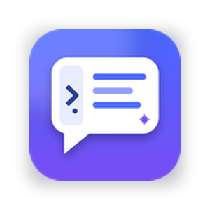

DeepSeek Sidebar Enhanced
DeepSeek 侧边栏增强版（非官方）
把 DeepSeek 聊天放进 Microsoft Edge 侧边栏，并补上网页正文读取、划词自动填入、对话引用、提示词库和 PDF 支持。
- 读取当前网页，只附加
.txt文档，不自动填写提示词 - 划词自动填入，取消选区自动撤回
- 引用 DeepSeek 回复，插入 Markdown 引用
- 粘贴创建提示词，自定义
/命令，输入/预览并插入 - 输入
@读取其他已打开标签页，自动排除当前页 - PDF 只附加文件，交给 DeepSeek 解析；本地 PDF 支持增强阅读器
需要 Microsoft Edge 桌面版 116+，并通过“加载解压缩的扩展”安装；安装说明见仓库的 INSTALL.md。手机 Edge 不支持这类侧边栏扩展。